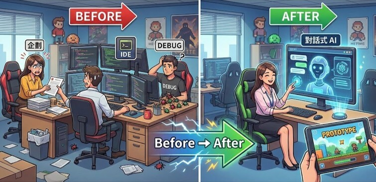
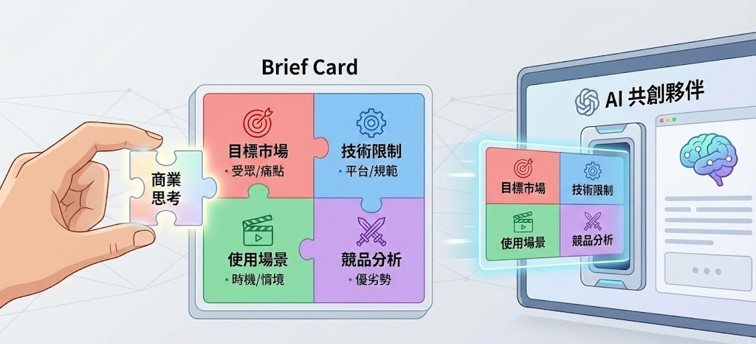

以前遊戲企劃如果只是做傳統 Slot，拿舊的 Code 改一改換皮就能一些原型基礎驗證。
但如果想要嘗試 「Slot 邏輯以外」的創新小遊戲（例如火箭、小雞），因為沒有公版可套，往往得求技術人員從零寫起，等他們有空也是難如登天。
現在不同了。AI 的生成能力爆炸，讓 Vibe Coding（描述式開發）改變這一切。
甚至不需要 VS Code，遊戲企劃只要與 AI 對話，AI就能給你一個能跑、能點、能體驗輸贏的 Slot 遊戲原型。Vibe Coding（描述式開發）已經悄悄的變成遊戲企劃工作流的一部分。
我做了一個實驗：「如果不寫一行程式碼，只靠與 AI (Gemini) 對話，能不能做出一個具備商業邏輯的 Slot 遊戲原型？」 結果令人驚艷。
以下是我在 30 分鐘內，從市場假設 → 遊戲設計 → AI Spec → 實作原型的全流程紀錄。並提供可直接使用的 Prompt、流程拆解與企劃觀點。
1 | 讓 AI 作你的「市調顧問」
我沒有直接對AI說: 生成一個好玩的遊戲吧!

是這樣告訴 AI ，我的任務前提:
-目標市場： 東南亞（SEA）
-技術限制： Web Cocos（輕量、低記憶體、網頁執行）
-使用場景： 世界盃期間，球迷邊看球、邊喝酒、邊掛機
-競品標竿： Aviator 等 Crash Game（高張力、短局長度）AI 消化後，給了 3 種方向:
- 兩款換皮（氣球、沖天炮） → 市場安全，但無亮點
- 一款美術高牆（打水漂） → 成本高，風險大
- 一款黑馬（蓋高樓 Tower Bloxx） → 直覺、美術可壓低、人人都懂
但 AI 快速的條列出一些可能性，節省了不少時間。
在這些遊戲裡再次提示篩選:
選擇這市場少見，但在遊戲市場實際落地過的方向。最後選擇類似 Tower Bloxx ，他是大多數玩家曾經看過，
或沒看過也能快速理解的遊戲。
2 | 讓 AI 作你的「策略參謀」
Tower Bloxx 原本是技術反應遊戲，與使用場景: 球迷邊看球、邊喝酒、也能邊掛機不太相符，但有潛力轉化。我這邊提供市場常見的模式:
1.接近 Slot： 一注一局、一翻兩瞪眼
2.接近 Crash： 高度成長，需手動停
3.接近踩地雷： 一關關往上，逐步累積倍率AI 回答我:
蓋房子可以用蓋上屋頂作正向的結尾，但 Crash 或 踩地雷沒過關必須 坍塌，所以選擇Slot，過關(WIN>1X)可以蓋完整屋頂，未過關(WIN<=1X)屋頂爛尾。
這個建議讓遊戲節奏變合理，也讓原型的視覺邏輯更具向。
3 | 讓 AI 開SPEC，作你的「AI 溝通師」
接著我把我腦袋裡的規格列出：
遊戲比例 寬高比 9:16
功能
- 畫面上半: 畫面60%以上蓋樓展演與蓋樓資訊
- 畫面下半: 畫面小於 40%以下操作與玩家資訊
- 加減押: 押注越大，樓層越華麗
- 速度模式: 可調快 1階 或直接看結果
- 自動: 可選擇場次
- 系統: 歷史紀錄或聲音開關
- 押注: 開始遊戲
- 玩家資訊:CREDIT / BET / WIN
流程-
[在] 押注後 [則] 展演蓋樓
蓋樓與倍數關係
1樓:0x,2 樓:0.5x,3 樓:1x,4 樓:2x,6 樓:4x,8 樓:6x,12樓:10x,15樓:15x,18樓: 20x,21樓: 25x,25樓:30x,30樓:40x,35樓:50x,40樓:80x,50樓:100~1000x
把我們以上討論的遊戲 SPEC，
歸納為 AI 看得懂的 PROMPT以下是 AI 生成的 PROMPT
你是一位 HTML5 遊戲工程師，請依據以下規格生成一個可執行的 Prototype。
【遊戲目標】
玩家每次下注後進行一次蓋樓結果的 RNG 判定。
【主要邏輯】
一注一結果（Slot 模式）
三種結果：
-成功封頂（高倍率）
-一般蓋樓（中倍率）
-爛尾停工（Loss）
結果由 RNG 控制，並可調整機率權重。
【視覺】
使用簡化方塊作為樓層
成功封頂時播放屋頂特效
爛尾時畫面變灰、停止上升
【鏡頭】
伴隨樓層高度向上平滑移動
封頂時給 0.8 秒停頓和亮光
【請輸出】
純 HTML + JS + Canvas，可直接在瀏覽器執行。4 | 讓 AI 做原型，作你專屬「前端工程師」
我開了一個Canvas 模式新對話，把 PROMPT 丟進去跑一下。
從溝通到原型不到30分鐘，一個包含「鏡頭運鏡」、「動態倍率」、「RNG 勝負判定」的 H5 遊戲原型就這樣跑起來了。我甚至連 VS Code 都沒打開。
5｜AI 時代的企劃已是一人小團隊
實驗可知得知，未來的遊戲企劃工作重點將轉移到以下三點：
- 提出邊界: 定義市場、設備、時機。
- 合理決策: 在 AI 給的無限方案中，選出對的那一個。
- AI 規格 : 把抽象的「手感」變成 AI 能懂的「Spec」。
AI 不會取代企劃的創意，但它能把「概念 → 原型」的距離縮短到半小時。
能以極低的成本快速試錯，是 AI 時代真正的競爭力。
你也試過用 AI 做原型嗎？
或是這款原型有什麼可以改進的地方？
歡迎在下方留言告訴我。